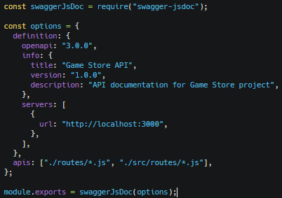
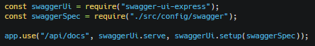
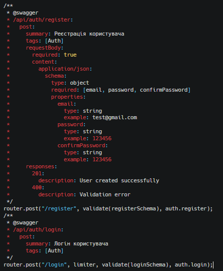
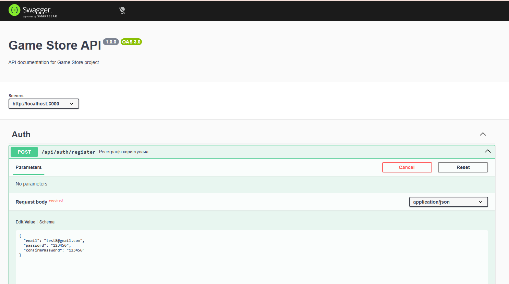
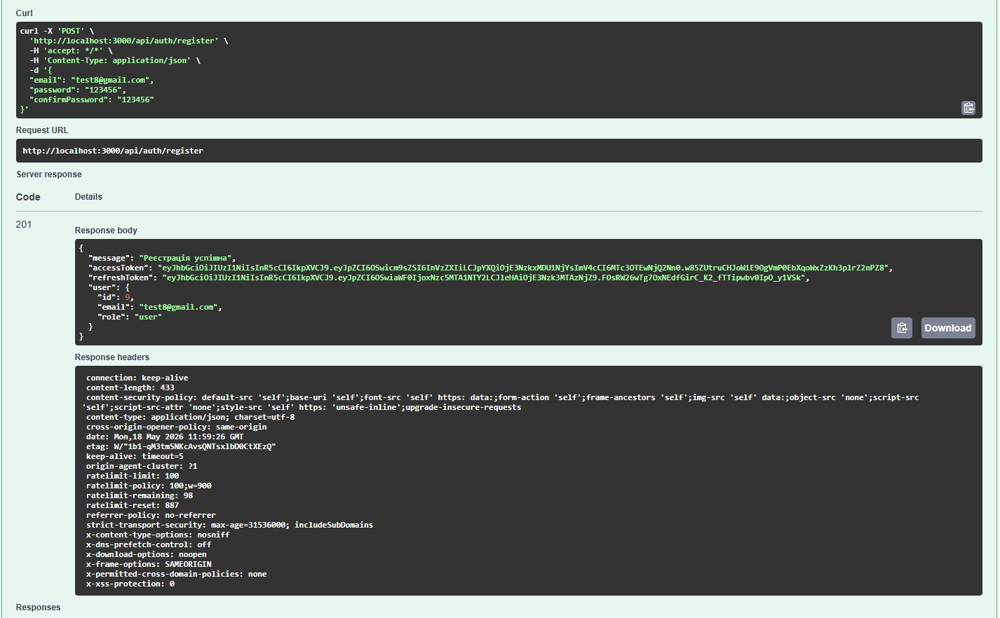

Зображення
Підключення swagger
swagger.js

Підключаємо у server.js

Документуємо auth.routes.js
auth.routes.js

Запускаємо сервер і відкриваємо: http://localhost:3000/api/docs де бачимо Swagger UI

